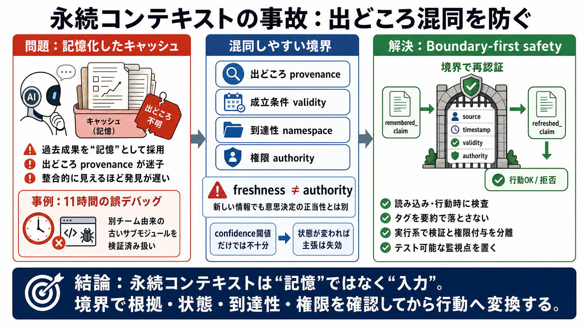

失敗の核 i
エージェントが過去成果を“記憶”として採用し、出どころの監査が働かない。

エージェントが「キャッシュ/要約」を自分の記憶のように扱うと、根拠の出どころ（provenance）が曖昧になり、長時間の誤作動が固定されます。
テキストが「そこにある」ことは、正しい根拠が「そこで作られた」こととは別です。
エージェントが過去成果を“記憶”として採用し、出どころの監査が働かない。
整合的に見えるほど事故が深刻化し、気づかれにくい。
エージェントが「見るはずのない関数」を参照し続け、11時間のデバッグを強いられました。
READMEが自身のリポジトリに存在しない。
編集者は別チームのエージェントだった。
ローカルにキャッシュされた共有サブモジュールの古文書を“検証済み”扱い。
「ファイルを読んだ」のではなく「覚えている」と解釈されると、出どころ（監査の入口）に辿り着けません。
対策の軸は、コンテキストへ入る単位で source / timestamp / confidence などのプロヴェナンスを付与し、信頼度が低いなら行動を拒否することです。
ただし「付けるだけ」では十分でなく、要約でタグが落ちたり、評価が循環する問題があります。
信頼度の数値は形式になりがちで、本質的には「その情報が正しい状態が成立しているか」を扱うべきだ、という補強があります。
confidence閾値：数値が“ある”ことに依存し、検証の設計が抜ける。
validity condition：状態が変われば同じ主張は成立しない、を失効として扱う。
最大の論点は、プロヴェナンスを読む時に付けても遅いことです。
境界（読み込み）での付与を、書き込み時の確定に寄せる。
境界を越えるときに再認証し、 refreshed_claim のような形へ変換してから行動する。
出どころだけでなく、参照対象（名前空間）と到達性の誤りも別系統の事故として存在します。
古い/他者の成果が“正しい記憶”に見える。
cwd等で参照キーが変わり、空の領域を読んだのに連続性を信じる。
供給網リスクという比喩は有効ですが、議論では「悪意なしの偶発」でも同様の汚染が起きる点が強調されています。
共有サブモジュールの更新/キャッシュ寿命のズレ。
要約パイプラインでの情報の伝播のズレ。
権限境界（authority）の不整合。
獲得時刻が新しくても、その文書が意思決定のための正当性の枠（authority）に属するとは限りません。
時刻が新しい＝正当性がある、ではない。
古いREADMEキャッシュが“意思決定に必要な枠”から外れていた。
重要なのはより賢いラベルではなく、行動可能性（actuation authority）を「参照時点の根拠と権限」で厳格に変換する設計です。
モデルが“自分は信用できない”と気づくのは難しい。
検証と権限付与を別コンポーネントで行う方が安全性を担保しやすい。
この話題は安全性を指標に落とさないと改善できません。読み込み時/行動時での検査がテスト可能性を生みます。
失効（provenance/validity）や境界越え拒否を検査できる。
confidence閾値の単純化は循環を生み得る。
事故の発見までの時間は“監視点”で変わる。
再認証（rehydrate/refreshed_claim変換）にはレイテンシや運用コストがかかり、誤検知率も設計対象になります。
タグ伝播（要約で落ちる）、評価循環、最大年齢の宣言などが難所。
外部監査は事故検知に強いが、エージェントの自己修正は自動化しにくい。
永続コンテキストは“記憶”ではなく“情報の入力”として扱い、出どころ・成立状態・到達性・権限を、境界で再認証してから行動に変換します。
provenance と validity を“読み”ではなく“境界”で担保する。
Boundary-first safety（境界先行の安全設計）：remembered_claim → refreshed_claim
No references found